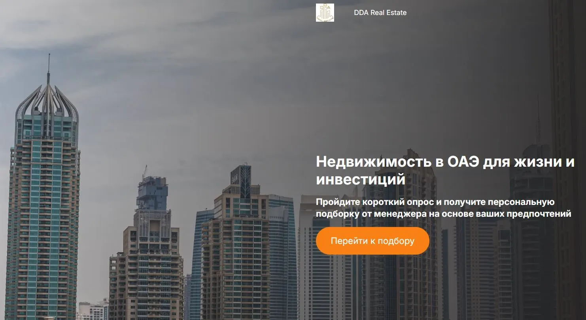
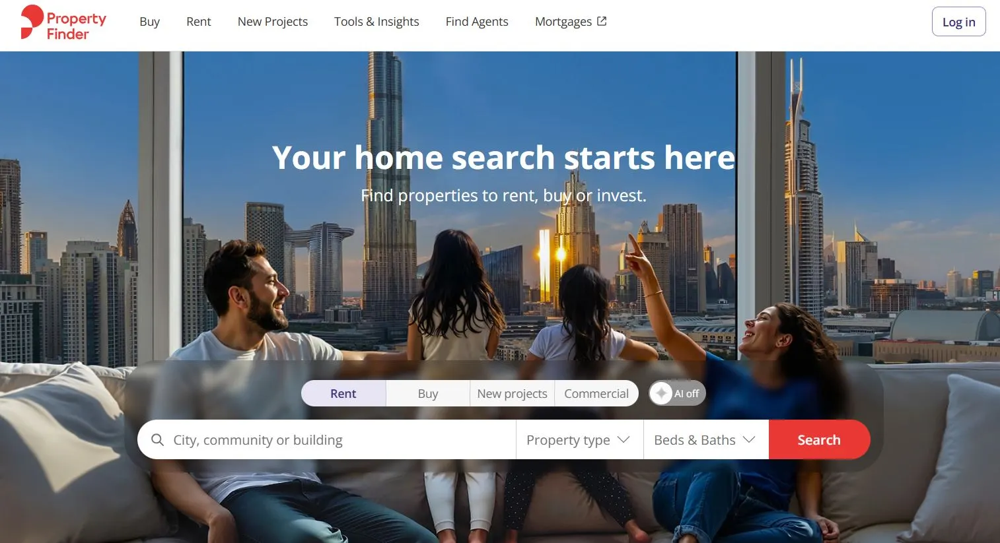

Аннотация
Вебкам индустрия становится всё более популярной, предлагая широкий спектр возможностей для заработка и развлечений. Вебкам сайты предоставляют зрителям доступ к прямым трансляциям, где вебкам модели общаются в режиме реального времени. Это отличный способ получить новые впечатления или даже стать частью захватывающего шоу.
Для тех, кто ищет лучшие сайты вебкам для заработка, важно знать, какие платформы предлагают выгодные условия, безопасность и высокие доходы. В то же время, зрители стремятся найти сайты вебкам с лучшими моделями, которые обеспечивают высокое качество видео и разнообразие контента.
В этой статье мы расскажем о:
- ТОП-3 сайтах для зрителей, которые предлагают лучшее качество и профессиональных моделей.
- ТОП-10 платформах для работы вебкам моделью, включая лучшие вебкам сайты для заработка, такие как Bongacams.
- Особенностях начала карьеры в вебкам индустрии, преимуществах этой работы и способах минимизации рисков.
Снять одежду с фото или заменить лицо на видео: Вам понравится крутое решение от нейросетей, где вы сможете снять одежду с любого фото или видео через технологию faceswap: faceswaps.pro
Эти рекомендации помогут вам выбрать лучшие вебкам сайты, будь вы зрителем или моделью. Обратите внимание, что для некоторых вебкам площадок требуется VPN.
ТОП-3 сайта для зрителей с лучшими вебкам моделями
- Bonga Cams – Один из самых популярных сайтов вебкам, предоставляющий огромное разнообразие категорий и моделей. Отличается высоким качеством трансляций и удобным интерфейсом.
- Runetki – Привлекает международную аудиторию и профессиональных моделей. Сайт славится высоким качеством видео в HD и интуитивно понятным интерфейсом.
- Stripchat – Идеальная платформа для любителей естественных трансляций. Здесь можно наслаждаться уникальным контентом и индивидуальным общением с моделями.
Эти сайты обеспечивают пользователям незабываемый опыт, сочетая профессионализм моделей и инновационные технологии. Сайты вебкам видео из этого списка предлагают всё необходимое для комфортного просмотра и интерактивного общения.
ТОП-10 лучших сайтов для работы вебкам моделью
1. Bonga Models
➡️ Сайт: bongamodels.com
Скажу сразу — это не тот случай, когда агентство пытается продать тебе всё подряд. У DDA чёткая специализация: новостройки Дубая и офф-план. Прямые контракты с Emaar, Damac, Sobha, Nakheel, Meraas — без лишнего звена в цепочке, без наценок посредника.
Когда я впервые с ними пообщался (искал варианты для знакомой — ей нужна была рассрочка застройщика, платить сразу 100% не вариант), первое, что удивило — менеджер не спешил. Спрашивал, что важно, какой горизонт планирования, есть ли интерес к перепродаже или только аренда. Это ощущается иначе, чем «давайте я вам покажу, что у нас есть». Реально слушал.
По Golden Visa — у них есть юрист, который ведёт процесс от начала до конца. Это не просто «мы знаем, как это делается» на словах. При покупке от 2 миллионов дирхамов запускают оформление вида на жительство параллельно со сделкой.
Дистанционная покупка — работает. Несколько знакомых закрывали сделки, не выезжая. Говорят, нормально — хотя я бы всё равно рекомендовал хотя бы один визит, если есть возможность.
Плюсы:- Прямые договоры с застройщиками — цена без накруток
- Офф-план с рассрочкой: схемы 40/60, 50/50, в отдельных проектах 20/80
- Дистанционное оформление покупки недвижимости в Эмиратах
- Консультация по доходности аренды и прогнозам по конкретным районам
- Помощь с оформлением Golden Visa при покупке от установленной суммы
- Вторичного рынка почти нет — если нужно купить готовый объект немедленно, это не сюда
- Открытый каталог неполный — часть предложений только по запросу
- В выходные отвечают медленнее
- Продажа элитной недвижимости в Дубае уровня «вилла на первой линии за 30 млн» — не их основной профиль
Кому подойдёт: Инвесторам с горизонтом 2–4 года, которые хотят войти в рынок через офф-план с минимальным первоначальным взносом. Тем, кому важен русскоязычный менеджер с реальной экспертизой — не просто переводчик.
Перейти на сайт2. Tranio
➡️ Изучить базу и подобрать жильё в Дубае под бюджетТут немного другая история. Tranio — не агентство в классическом смысле. Скорее инструмент анализа, к которому прикручены живые агенты. Большой международный агрегатор, присутствует в десятках стран — и раздел по dubai real estate у них один из самых широких среди русскоязычных платформ.
Что реально полезно — аналитика. Можно посмотреть среднюю стоимость квартиры в Дубае по районам, динамику за несколько лет, примерный ROI по типам объектов. Это не рекламные цифры от застройщика — хотя, конечно, и не независимый аудит. Но уже что-то близкое к реальности.
Ещё удобство: стоимость жилья в Дубае сразу пересчитывается в рубли — для тех, кто планирует бюджет в рублях, это помогает на этапе первичной оценки. Есть и готовые объекты, и офф-план. Business Bay, Dubai Marina, Downtown Dubai, JVC, Jumeirah Lake Towers — можно фильтровать, сравнивать, прикидывать. Кстати, здесь же удобно изучать квартиры в Эмиратах в целом — не только Дубай, но и Абу-Даби, Шарджа: для тех, кто ещё не определился, где именно купить жильё в ОАЭ.
Если честно — я бы использовал Tranio как стартовую точку. Понять рынок, прикинуть реалистичный бюджет, сформировать список вопросов — и только потом идти в конкретное агентство на переговоры.
Плюсы:- Широкая база: готовые объекты и офф-план по всем ключевым районам
- Аналитика — тренды цен, сравнение доходности, прогнозы
- Цены на недвижимость в ОАЭ сразу в нескольких валютах, включая рубли
- Юридическое сопровождение сделки входит в услугу
- Удобно для самостоятельного изучения до звонка менеджеру
- Не все листинги обновляются в реальном времени — бывает, что объект уже продан
- Часть объявлений ведёт к локальным брокерам с разным уровнем работы
- По офф-план проектам уступает узкоспециализированным агентствам
Кому подойдёт: Тем, кто на стадии изучения: хочет понять рынок, сравнить районы, оценить реалистичность своего бюджета — прежде чем принимать решение. Подходит инвесторам, которые привыкли работать с данными, а не с рекламными презентациями.
Перейти на сайт3. Резиденция
➡️ Купить квартиру в Арабских Эмиратах с юридической защитойЧестно скажу, что именно меня больше всего пугало в теме покупки жилья в Дубае. Не цена. Не расстояние. Вот это ощущение: приходишь в чужую правовую систему, не знаешь, как работает регистрация в Dubai Land Department, кто такой RERA и зачем проверять эскроу-счёт — и тебя могут просто обвести вокруг пальца.
«Резиденция» — это агентство, которое закрывает именно этот страх. Специализируются на полном юридическом сопровождении сделки. От первичной проверки объекта по реестру RERA до оформления титула собственности и регистрации в Dubai Land Department. Плюс — помогают с открытием счёта в местном банке и вопросом перевода денег, что для покупателей из России отдельная головная боль.
Работают на русском. Понимают специфику клиентов из СНГ — это чувствуется в том, как выстроена коммуникация. И не бросают после подписания: есть услуга property management, если хотите сдавать купленный объект без самостоятельного управления.
Плюсы:- Полный юридический цикл: проверка объекта, оформление сделки, регистрация титула
- Помощь с открытием счёта в ОАЭ и переводом средств
- Консультации по сервисным сборам, налогам и расходам при покупке
- Работают как с готовыми объектами, так и с офф-план
- Управление арендой после сделки — под ключ
- Навигация на сайте не самая удобная
- Небольшая команда — в пиковый сезон иногда задержки
- Сегмент топовой элитной недвижимости Дубая (Palm Jumeirah уровня «вилла за 20 млн») представлен слабее
Кому подойдёт: Тем, кто впервые выходит на рынок ОАЭ и хочет быть уверен в каждом шаге. Покупателям из России и СНГ, которым важна юридическая чистота — и сопровождение на родном языке без ощущения, что ты сам во всём разбираешься. Особенно актуально для тех, кто решил купить квартиру в арабских эмиратах впервые и ещё не понимает, чем местная правовая система отличается от привычной.
Перейти на сайт4. Bayut
➡️ Открыть Bayut — крупнейший агрегатор объявлений о продаже недвижимости в ДубаеЕсли нужно понять, сколько стоит квартира в Дубае прямо сейчас — не по рекламным буклетам, а по реальному рынку — Bayut покажет это быстрее и честнее, чем что угодно. Крупнейший местный агрегатор. База огромная: студии в JVC, апартаменты в Dubai Marina, таунхаусы в Jumeirah Beach Residence, виллы в Dubai Hills Estate, объекты в Dubai Creek Harbour, Meydan, Dubai South.
Здесь можно посмотреть среднюю стоимость квартиры в Дубае по конкретному району — не цифру из рекламы застройщика, а срез реального рынка. Это помогает быстро понять, где цена объекта нормальная, а где — завышена.
Но есть принципиальный момент: Bayut — это агрегатор. Они не ведут сделку. Выбираете объект — выходите на брокера самостоятельно. А брокеры там очень разные. Это риск.
Плюсы:- Реальные рыночные цены по всем районам и типам объектов
- Удобная карта с фильтрами по близости к метро, школам, торговым центрам
- Аналитика по динамике цен и ROI по районам
- Раздел аренды — удобно сначала снять район, оценить, потом купить
- Верификация большинства объявлений
- Только английский и арабский — русской версии нет
- Не агентство, не ведёт сделку — брокера выбираете сами, риск непрофессионала есть
- Для дистанционной покупки инструментов недостаточно
- Устаревшие объявления периодически попадаются
Кому подойдёт: Тем, кто уже разбирается в рынке, свободно читает по-английски и хочет максимально широкую выборку для анализа. Хороший справочник по ценам перед выходом на конкретное агентство.
Перейти на сайт5. Property Finder
➡️ Найти квартиры, апартаменты и виллы в ОАЭ — Property Finder
По функциям похож на Bayut, но с одним отличием, которое на практике важно. Здесь работает система рейтингов брокеров: реальные отзывы клиентов, оценки, история сделок. Когда покупаешь квартиру в Дубае впервые и не знаешь никого на местном рынке — это хотя бы какой-то ориентир, кому можно доверять, а кому нет.
Есть офф-план раздел с новостройками Дубая от Emaar, Damac и других — с условиями рассрочки прямо в карточке. Калькулятор ипотеки встроен. Рыночные отчёты периодически обновляются. В целом — полезная точка входа.
Плюсы:- Рейтинги брокеров с реальными отзывами — можно выбрать агента осознанно
- Широкий выбор: студии, апартаменты, виллы в ОАЭ, таунхаусы
- Подробные карточки объектов с фото, планировками, условиями
- Встроенный калькулятор ипотеки в Дубае и расчёт сервисных сборов
- Рыночные отчёты с динамикой по районам
- Русского интерфейса нет
- Агрегатор, не агентство — сделку ведёт брокер, которого выбираете сами
- Устаревшие объявления встречаются
- По аналитике офф-план уступает специализированным агентствам
Кому подойдёт: Покупателям, которые хотят сами выбрать брокера по отзывам и при этом получить широкую базу объектов. Хорошая точка входа перед переходом к конкретному агентству.
Перейти на сайтКак начать работать вебкам моделью
Работа вебкам моделью – это простой способ начать зарабатывать из дома, требующий минимальных вложений и обеспечивающий гибкость графика. Следуя пошаговой инструкции, вы сможете успешно начать карьеру на лучших вебкам сайтах для работы.
1. Подготовьте оборудование
- Убедитесь, что у вас есть качественная веб-камера и микрофон.
- Обеспечьте стабильное интернет-соединение.
- Настройте освещение и создайте комфортное рабочее место.
2. Выберите платформу
Рекомендуем начать с популярных сайтов, таких как Bonga Models, Chaturbate или Camwork. Обратите внимание на комиссии, способы вывода средств и дополнительные функции платформы.
3. Зарегистрируйтесь
- Создайте аккаунт на выбранной платформе.
- Загрузите фото и заполните профиль, чтобы привлечь зрителей.
- Пройдите верификацию личности.
4. Начните трансляции
- Проведите свои первые эфиры, чтобы понять, как работает система.
- Общайтесь с аудиторией и экспериментируйте с контентом.
5. Привлекайте зрителей
- Используйте инструменты продвижения платформы.
- Регулярно обновляйте свой профиль и публикуйте новый контент.
- Участвуйте в конкурсах и мероприятиях для моделей.
6. Управляйте доходами
- Выберите удобный способ вывода средств, например, банковский перевод или электронные кошельки.
- Следите за минимальными суммами вывода, чтобы планировать свои финансы.
Начать работать вебкам моделью легко, если следовать этим шагам. Вебкам сайты для моделей предоставляют все инструменты для успешного старта, а качественное оборудование и активность помогут быстро увеличить доход.
Что важно учитывать при выборе вебкам платформы
Правильный выбор платформы – ключ к успешной работе в вебкам индустрии. Каждая платформа имеет свои особенности, и важно учитывать ключевые факторы, чтобы найти оптимальный вебкам сайт для работы.
1. Уровень комиссии
- Узнайте, сколько процентов платформа удерживает с вашего заработка. Например, Bongacams предлагает одну из самых низких комиссий на рынке.
- Сравните условия оплаты с другими платформами.
2. Поддержка моделей
- Многие сайты, такие как Bonga Models, предоставляют обучающие материалы для новичков.
- Убедитесь, что есть техподдержка, доступная 24/7.
3. Аудитория
- Платформы с международным трафиком, такие как Chaturbate, обеспечивают больше возможностей для заработка.
- Если вы ориентированы на русскоязычных зрителей, выбирайте Bonga Models.
4. Способы вывода средств
- Проверьте, какие способы выплаты предлагает сайт (банковские переводы, электронные кошельки, криптовалюта).
- Узнайте минимальную сумму вывода и частоту выплат.
5. Уровень защиты
- Выбирайте платформы, где обеспечена конфиденциальность данных. Например, Camlust позволяет ограничивать доступ по регионам.
- Используйте функции маскировки, чтобы сохранить анонимность.
6. Дополнительные функции
- У некоторых сайтов есть уникальные инструменты, такие как AR/VR трансляции на Camlust или интерактивные подарки на Stripchat.
- Узнайте о возможностях заработка на продаже фото и видео.
7. Репутация платформы
- Изучите отзывы других моделей и убедитесь, что сайт стабильно выплачивает доход.
- Используйте форумы и сообщества для поиска информации.
Учитывая эти аспекты, вы сможете выбрать лучший сайт для работы вебкам моделью, который соответствует вашим требованиям и целям.
Преимущества работы на вебкам площадках
Работа вебкам моделью предлагает гибкие условия и высокие доходы, что делает её привлекательной для людей по всему миру. Вот основные преимущества, которые дают лучшие вебкам сайты.
1. Высокий доход
- Бонгакамс и LiveJasmin обеспечивают моделям стабильные заработки благодаря большому количеству пользователей.
- Возможность зарабатывать не только на трансляциях, но и на продаже контента, чаевых и бонусах.
2. Гибкость графика
- Вы сами выбираете, когда работать. Это идеально подходит для студентов, домохозяек и тех, кто ищет дополнительный доход.
3. Работа из дома
- Достаточно иметь компьютер, камеру и интернет, чтобы начать зарабатывать, не выходя из дома.
4. Анонимность и безопасность
- Платформы, такие как Camlust и Bongacams, позволяют скрывать личность, ограничивать доступ по регионам и использовать псевдонимы.
5. Развитие навыков
- Работа в вебкам индустрии помогает развивать навыки общения, уверенность в себе и креативность.
6. Легкий старт
- Регистрация на большинстве сайтов бесплатна, а требования к оборудованию минимальны.
7. Перспективы роста
- Сайты, такие как Stripchat, поддерживают продвижение моделей через конкурсы, рейтинги и бонусные программы.
8. Поддержка со стороны платформ
- Bonga Models и другие крупные платформы предлагают обучающие материалы и поддержку для новичков.
Эти преимущества делают работу на вебкам сайтах идеальной для тех, кто хочет зарабатывать в интернете, сохраняя независимость и гибкость.
Риски и как их минимизировать
Работа на вебкам сайтах предлагает большие возможности, но также имеет свои риски. Чтобы сделать этот вид деятельности безопасным и комфортным, важно учитывать возможные угрозы и принимать меры по их минимизации.
1. Угроза конфиденциальности
Работа вебкам моделью может привлечь нежелательное внимание, если данные модели попадут в сеть.
Как избежать:
- Используйте функции маскировки, предоставляемые платформами, такими как Bonga Models и Camlust.
- Работайте под псевдонимом и избегайте использования личной информации.
2. Финансовые риски
Некоторые платформы могут задерживать выплаты или взимать высокие комиссии.
Решение:
- Выбирайте проверенные сайты с прозрачными условиями, такие как Chaturbate или Bonga Models.
- Изучите отзывы о платежеспособности платформы.
3. Мошенничество
Зрители могут предлагать переводы вне платформы, что несёт риск не получить оплату.
Как избежать:
- Работайте исключительно через встроенные системы оплаты платформы.
- Сообщайте о подозрительных пользователях в службу поддержки.
4. Эмоциональное выгорание
Постоянное взаимодействие с пользователями может привести к усталости и стрессу.
Решение:
- Установите чёткий график работы и делайте регулярные перерывы.
- Поддерживайте баланс между работой и личной жизнью.
5. Юридические аспекты
Вебкам индустрия регулируется по-разному в разных странах.
Как избежать проблем:
- Ознакомьтесь с местным законодательством и налоговыми требованиями.
- Используйте только официальные платформы.
6. Технические сбои
Проблемы с интернетом или оборудованием могут прервать трансляции и снизить доход.
Решение:
- Инвестируйте в качественное оборудование и подключение.
- Подготовьте резервный план на случай технических неполадок.
7. Отрицательное влияние на репутацию
Работа в вебкам индустрии может столкнуться с критикой или осуждением.
Как защитить себя:
- Держите свою деятельность в тайне, если это важно для вас.
- Выбирайте платформы с возможностью ограничивать доступ для определённых стран.
Учитывая эти риски и соблюдая меры предосторожности, вы сможете безопасно и эффективно работать на вебкам сайтах для заработка.
Часто задаваемые вопросы
- Можно ли работать анонимно? Да, большинство платформ, таких как Bongacams и Camslust, предоставляют функции для защиты анонимности:
1. Возможность блокировать зрителей из определённых стран.
2. Использование псевдонима вместо реального имени.
- Какой доход может получить новичок? Заработок зависит от платформы и времени, которое вы готовы посвятить работе. Новички обычно зарабатывают от $500 до $1000 в первый месяц, работая на сайтах с высокой посещаемостью, таких как Chaturbate или Stripchat.
- Какие вебкам сайты поддерживают ежедневные выплаты? Платформы, такие как Bonga Models и MyFreeCams, предлагают ежедневные выплаты, что позволяет моделям быстрее распоряжаться заработанными средствами.
- Нужны ли начальные вложения? Основные затраты – это покупка веб-камеры, микрофона и настройка освещения. Однако крупные платформы не требуют дополнительных расходов, а некоторые предоставляют бонусы для новичков.
- Можно ли работать без показа лица? Да, сайты, такие как Camlust, поддерживают работу в масках или с эффектами для скрытия лица. Однако это может снизить количество зрителей.
- Как выбрать лучший сайт для работы? Ориентируйтесь на:
1. Уровень комиссии (например, Bongacams предлагает выгодные условия).
2. Наличие поддержки и обучающих материалов.
3. Аудиторию и трафик платформы.
- Нужно ли платить налоги? Заработок на вебкам сайтах подлежит налогообложению в зависимости от законодательства вашей страны. Убедитесь, что вы в курсе местных налоговых требований.
- Как привлечь больше зрителей? Используйте функции продвижения платформы, такие как рейтинги и конкурсы.
1. Регулярно обновляйте профиль и публикуйте уникальный контент.
2.Общайтесь с аудиторией и предлагайте интерактивные шоу.
Ответы на эти вопросы помогут разобраться в основных аспектах работы и выбрать лучший вебкам сайт для заработка.
Заключение
Работа в вебкам индустрии – это не только возможность заработать, но и шанс развивать навыки, выстраивать гибкий график и находить новые формы самореализации. Выбор правильного сайта, такого как Bongacams, Xlove или Chaturbate, станет первым шагом к успешной карьере.
Мы рассмотрели ТОП-3 сайта для зрителей, которые предоставляют высококачественный контент, и ТОП-10 платформ для работы вебкам моделям, каждая из которых предлагает уникальные условия. Работа на лучших вебкам сайтах обеспечивает модели защиту данных, высокие доходы и поддержку в развитии.
Если вы только начинаете, используйте эти советы:
- Подготовьте оборудование и выберите площадку с низкими комиссиями.
- Работайте над созданием уникального контента.
- Поддерживайте баланс между работой и личной жизнью, чтобы избежать выгорания.
Вебкам сайты, такие как Bongacams, предоставляют отличные условия как для новичков, так и для профессионалов. Начните с малого и достигайте больших результатов!